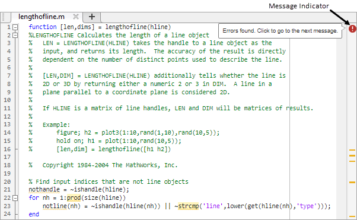
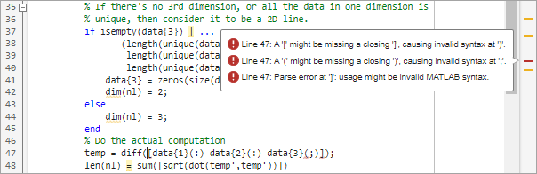
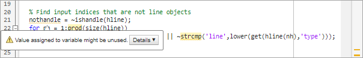
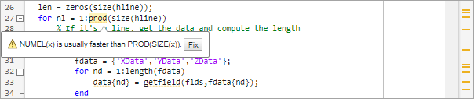
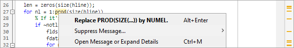

Check Code for Errors and Warnings Using the Code Analyzer
The MATLAB® Code Analyzer can automatically check your code for coding problems. You can view warning and error messages about your code, and modify your file based on the messages. The messages are updated automatically and continuously so you can see if your changes address the issues noted in the messages. Some messages offer additional information, automatic code correction, or both.
A list of all checks performed by the MATLAB Code Analyzer can be found here, Index of Code Analyzer Checks.
Enable Continuous Code Checking
To enable continuous code checking, on the Home tab, in the
Environment section, click
Settings. Select MATLAB > Code Analyzer, and then select the Enable continuous code
checking check box. Set the Underlining option
to Underline warnings, errors, and info messages.
When continuous code checking is enabled, MATLAB displays warning and error messages about your code in the Editor and
Live Editor. For example, the sample file lengthofline.m contains
several errors and warnings. Copy the code into the Editor and save the file as
lengthofline.m.
View Code Analyzer Status for File
When you open a file in the Editor or Live Editor, the message indicator at the top of the indicator bar shows the overall Code Analyzer status for the file.
| Message Indicator | Description |
|---|---|
File contains syntax errors or other significant issues. | |
File contains warnings or opportunities for improvement, but no errors. | |
File contains no errors, warnings, or opportunities for improvement. | |
| Continuous code checking disabled. |
For example, in lengthofline.m, the message indicator is  , meaning that the file contains at least one
error.
, meaning that the file contains at least one
error.

View Code Analyzer Messages
To go to the first code fragment containing a message, click the message indicator. The identified code fragment is underlined in either red for errors or orange for warnings and improvement opportunities. If the file contains an error, clicking the message indicator brings you to the first error.
For example, in lengthofline.m, when you click the message
indicator, the cursor moves to line 47, where the first error occurs. MATLAB displays the errors for that line next to the error marker in the
indicator bar. Multiple messages can represent a single problem or multiple
problems. Addressing one message might address all of them. Or, after you address
one, the other messages might change or what you need to do can become
clearer.

To go to the next code fragment containing a message, click the message indicator.
You also can click a marker in the indicator bar to go to the line that the marker
represents. For example, click the first marker in the indicator bar in
lengthofline.m. The cursor moves to the beginning of line
21.
To view the message for a code fragment, move the mouse pointer within the underlined code fragment. Alternatively, you can position your cursor within the underlined code fragment and press Ctrl+M. If additional information is available for the message, the message includes a Details button. Click the button to display the additional information and any suggested user actions.

Fix Problems in Code
For each message in your code file, modify the code to address the problem noted in the message. As you modify the code, the message indicator and underlining are updated to reflect changes you make, even if you do not save the file.
For example, on line 47 in lengthofline.m, the message suggests
a delimiter imbalance. When you move the arrow keys over each delimiter, MATLAB does not appear to indicate a mismatch. However, code analysis detects
the semicolon in data{3}(;) and interprets it as the end of a
statement.
To fix the problem in line 47, change data{3}(;) to
data{3}(:). The single change addresses all of the messages
on line 47, and the underline no longer appears for the line. Because the change
removes the only error in the file, the message indicator at the top of the bar
changes from  to , indicating that only warnings and potential
improvements remain.
to , indicating that only warnings and potential
improvements remain.
For some messages, MATLAB suggests an automatic fix that you can apply to fix the problem. If an automatic fix is available for a problem, the code fragment is highlighted and the message includes a Fix button.

For example, on line 27 in lengthofline.m, place the mouse over
the underlined and highlighted code fragment prod. The displayed
message includes a Fix button.
If you know how to fix the problem, perhaps from prior experience, click the Fix button or press Alt+Enter. If you are unfamiliar with the problem, right-click the highlighted code. The first item in the context menu shows the suggested fix. Select the item to apply the fix.

If multiple instances of a problem exist, MATLAB might offer to apply the suggested fix for all instances of the
problem. To apply the fix for all instances of a problem, right-click the
highlighted code and select Fix All (n)
Instances of This Issue. This option is not available for all
suggested fixes.
After you modify the code to address all the messages or disable designated
messages, the message indicator becomes green. See the example file,
lengthofline2.m, with all messages addressed.
Analyze Files Using the Code Issues Panel
Since R2025a
You can use the Code Issues panel to view error and warning messages about your code. The Code Issues panel displays the coding problems found by the MATLAB Code Analyzer as it automatically checks your code.
To open the Code Issues panel, go to the Editor or Live Editor tab, and in the Analyze section, click Code Issues. Alternatively, click the message indicator at the top of the indicator bar. By default, the Code Issues panel opens on the right side of the desktop. To hide the Code Issues panel, click the Code Issues icon in the sidebar.

You can change what messages display in the Code Issues panel using the options at the top of the panel:
Change which files to look for issues in — In the drop-down list at the top-left of the Code Issues panel, select
Current Fileto show the errors, warnings, and info messages for the current file orOpen Filesto show the errors, warnings, and info messages for all open files.Filter messages by type — At the top-right of the Code Issues panel, click the Errors , Warnings , or Infos button to toggle whether to show messages of that type. For example, to show only errors, click the Errors button on and the Warnings and Infos buttons off.
Filter messages by text — Use the search field below the drop-down list to filter the list of messages by text. For example, to display only messages that contain the word
Variable, enter the wordVariablein the search field.
Analyze Files Using the Code Analyzer App
Since R2022b
You can create a report of Code Analyzer messages for all files in a folder using the Code Analyzer app.
To open the app:
MATLAB Toolstrip: On the Apps tab, under MATLAB, click the app icon:
 .
.MATLAB command prompt: Enter
codeAnalyzer.

Identify and Store Issues in Files With codeIssues Object
Since R2022b
You can use codeIssues to programmatically find and store issues in code. The
codeIssues object stores issues found by the MATLAB Code Analyzer. The issues found in one or more specified files or
folders can be sorted and filtered, either programmatically on the command line or
interactively in the Code Analyzer app.
For example, you can generate a codeIssues object containing
the issues in a specified file:
issues = codeIssues("test.m")issues =
codeIssues with properties:
Date: 18-Oct-2022 14:18:54
Release: "R2023a"
Files: "C:\MyCode\test.m"
CodeAnalyzerConfiguration: "active"
Issues: [3×10 table]
SuppressedIssues: [0×11 table]
Issues table preview
Location Severity Fixability Description CheckID LineStart LineEnd ColumnStart ColumnEnd FullFilename
________ ________ __________ ____________________________________________________________________________________________ _______ _________ _______ ___________ _________ __________________
"test.m" info manual "Variable appears to change size on every loop iteration. Consider preallocating for speed." AGROW 3 3 1 3 "C:\MyCode\test.m"
"test.m" info auto "Add a semicolon after the statement to hide the output (in a script)." NOPTS 6 6 3 3 "C:\MyCode\test.m"
"test.m" info auto "string('...') is not recommended. Use "..." instead." STRQUOT 8 8 1 13 "C:\MyCode\test.m"
In R2023b: The information contained in the a
codeIssues object can be exported using export.
Adjust Code Analyzer Message Indicators and Messages
You can specify which type of coding issues are underlined to best suit your current development stage. For example, when first coding, you might prefer to underline only errors, because warnings can be distracting. To change the underlining settings, on the Home tab, in the Environment section, click Settings. Select MATLAB > Code Analyzer, and then select an Underlining option.
You also can adjust what messages you see when analyzing your code. Code analysis
does not provide perfect information about every situation. Sometimes, you might not
want to change the code based on a message. If you do not want to change the code,
and you do not want to see the indicator and message for a specific line, you can
suppress them. For example, the first message on line 48 of the sample file
lengthofline.m is Terminate
statement with semicolon to suppress output (in functions). Adding a
semicolon to the end of a statement suppresses output and is a common practice. Code
analysis alerts you to lines that produce output, but lack the terminating
semicolon. If you want to view output from line 48, do not add the semicolon as the
message suggests.
You can suppress (turn off) the indicators for warning and error messages in these ways:
Suppress an instance of a message in the current file.
Suppress all instances of a message in the current file.
Suppress all instances of a message in all files.
You cannot suppress error messages such as syntax errors.
Suppress an Instance of a Message in the Current File
You can suppress a specific instance of a Code Analyzer message in the current
file. For example, to suppress the message on line 48 in the sample file
lengthofline.m, right-click the first underline on line
48 and select Suppress 'Terminate statement with semicolon...' > On This Line.
The comment %#ok<NOPRT> appears at the end of the
line, which instructs MATLAB to suppress the Terminate statement
with semicolon to suppress output (in functions) Code Analyzer
message for that line. The underline and mark in the indicator bar for the
message disappear.
If a line contains two messages that you do not want to display, right-click
each underline separately and select the appropriate entry from the context
menu. The %#ok syntax expands. For example, suppressing both
messages for line 48 in the sample file lengthofline.m adds
the comment %#ok<NBRAK,NOPRT> at the end of the
line.
Even if Code Analyzer settings are set to enable this message, the specific
instance of the suppressed message does not appear because the
%#ok takes precedence over the setting. If you later
decide you want to show the Terminate statement with
semicolon to suppress output (in functions) Code Analyzer message
for that line, delete %#ok<NOPRT> from the line.
Suppress All Instances of a Message in the Current File
You can suppress all instances of a specific Code Analyzer message in the
current file. For example, to suppress all instances of the message on line 48
in the sample file lengthofline.m, right-click the first
underline on line 48 and select Suppress 'Terminate statement with semicolon...' > In This File.
The comment %#ok<*NOPRT> appears at the end of the
line, which instructs MATLAB to suppress all instances of the Terminate statement with semicolon to suppress output (in
functions) Code Analyzer message in the current file. All
underlines and marks in the message indicator bar that correspond to this
message disappear.
If a line contains two messages that you do not want to display anywhere in
the current file, right-click each underline separately and select the
appropriate entry from the context menu. The %#ok syntax
expands. For the example, suppressing both messages for line 48 in the sample
file lengthofline.m adds the comment
%#ok<*NBRAK,*NOPRT>.
Even if Code Analyzer settings are set to enable this message, the message
does not appear because the %#ok takes precedence over the
setting. If you later decide you want to show all instances of the Terminate statement with semicolon to suppress output (in
functions) Code Analyzer message in the current file, delete
%#ok<*NOPRT> from the line.
Suppress All Instances of a Message in All Files
You can disable all instances of a Code Analyzer message in all files. For
example, to suppress all instances in all files of the message on line 48 in the
sample file lengthofline.m, right-click the first underline
on line 48 and select Suppress 'Terminate statement with semicolon...' > In All Files. This option modifies the Code Analyzer settings.
If you know which messages you want to suppress, you can disable them directly using Code Analyzer settings:
On the Home tab, in the Environment section, click Settings.
Select MATLAB > Code Analyzer.
Search the messages to find the ones you want to suppress.
Clear the check box associated with each message you want to suppress in all files.
Click OK.
Save and Reuse Code Analyzer Message Settings
You can set options to enable or disable certain Code Analyzer messages, and then save those settings to a file. When you want to use a settings file with a particular file, you select it from the Code Analyzer settings. The settings file remains in effect until you select another settings file. Typically, you change the settings file when you have a subset of files for which you want to use a particular settings file.
To save settings to a file:
On the Home tab, in the Environment section, click Settings.
Select MATLAB > Code Analyzer.
Enable or disable specific messages or categories of messages.
Click the Actions button , select Save As, and then save the settings to a
txtfile.Click OK.
You can reuse these settings for any MATLAB file, or provide the settings file to another user. To use the saved settings:
On the Home tab, in the Environment section, click Settings.
Select MATLAB > Code Analyzer.
Open the Active settings list and select Browse.
Choose from any of your settings files.
The settings you choose remain in effect for all MATLAB files until you select another set of Code Analyzer settings.
Enable custom checks and configure existing checks
Since R2023a
You can configure existing checks displayed in the MATLAB editor by the Code
Analyzer and add custom checks by placing a file named
codeAnalyzerConfiguration.json in a resources folder. The
configuration file is effective in the folder containing the resources folder and
any subfolders.
You can modify existing Code Analyzer checks, including whether the check is enabled and its severity, message text, and parameters if the check has any, such as to limit the number of input and output arguments for a function. You can also create custom checks that trigger when specific functions are used. For more information on configuring Code Analyzer checks, see Configure Code Analyzer.
Validate your codeAnalyzerConfiguration.json configuration file
for proper formatting by using the function matlab.codeanalysis.validateConfiguration.
Understand Code Containing Suppressed Messages
If you receive code that contains suppressed messages, you might want to review the messages without having to unsuppress them first. A message might be in a suppressed state for any of the following reasons:
One or more
%#ok<message-ID>directives are on a line of code that elicits a message specified by<message-ID>.One or more
%#ok<*message-ID>directives are in a file that elicits a message specified by<message-ID>.The messages are cleared in the Code Analyzer settings pane.
The messages are disabled by default.
To determine why messages are suppressed call codeIssues with the file as the input.
issues = codeIssues("myFile.m")The output, issues, will have a property,
SuppressedIssues, contains a table listing all the suppressed
issues within the file. Review the message associated with each issue to understand
why it is suppressed.
Understand the Limitations of Code Analysis
Code analysis is a valuable tool, but it has some limitations:
Code analysis sometimes fails to produce Code Analyzer messages where you expect them.
By design, code analysis attempts to minimize the number of incorrect messages it returns, even if this behavior allows some issues to go undetected.
Code analysis sometimes produces messages that do not apply to your situation.
Clicking the Details button to display additional information for a message can help you determine if the message applies to your situation. Error messages are almost always problems. However, many warnings are suggestions to look at something in the code that is unusual, but might be correct in your case.
Suppress a warning message if you are certain that the message does not apply to your situation. If your reason for suppressing a message is subtle or obscure, include a comment giving the rationale. That way, those who read your code are aware of the situation.
For more information, see Adjust Code Analyzer Message Indicators and Messages.
Distinguish Function Names from Variable Names
Code analysis cannot always distinguish function names from variable names.
For the following code, if the Code Analyzer message is enabled, code analysis
returns the message, Code Analyzer cannot determine whether xyz is a
variable or a function, and assumes it is a function. Code
analysis cannot make a determination because xyz has no
obvious value assigned to it. However, the code might have placed the value in
the workspace in a way that code analysis cannot detect.
function y=foo(x) . . . y = xyz(x); end
For example, in the following code, xyz can be a function
or a variable loaded from the MAT-file. Code analysis has no way of making a
determination.
function y=foo(x)
load abc.mat
y = xyz(x);
endeval, evalc, evalin, or assignin functions.If code analysis mistakes a variable for a function, do one of the following:
Initialize the variable so that code analysis does not treat it as a function.
For the
loadfunction, specify the variable name explicitly in theloadcommand line. For example:function y=foo(x) load abc.mat xyz y = xyz(x); end
Distinguish Structures from Handle Objects
Code analysis cannot always distinguish structures from handle objects. In the
following code, if x is a structure, you might expect a Code
Analyzer message indicating that the code never uses the updated value of the
structure. If x is a handle object, however, then this code
can be
correct.
function foo(x) x.a = 3; end
Code analysis cannot determine whether x is a structure or
a handle object. To minimize the number of incorrect messages, code analysis
returns no message for the previous code, even though it might contain a subtle
and serious bug.
Distinguish Built-In Functions from Overloaded Functions
If some built-in functions are overloaded in a class or on the path, Code Analyzer messages might apply to the built-in function, but not to the overloaded function you are calling. In this case, suppress the message on the line where it appears or suppress it for the entire file.
For information on suppressing messages, see Adjust Code Analyzer Message Indicators and Messages.
Determine the Size or Shape of Variables
Code analysis has a limited ability to determine the type of variables and the shape of matrices. Code analysis might produce messages that are appropriate for the most common case, such as for vectors. However, these messages might be inappropriate for less common cases, such as for matrices.
Analyze Class Definitions with Superclasses
Code Analyzer has limited capabilities to check class definitions with superclasses. For example, Code Analyzer cannot always determine if the class is a handle class, but it can sometimes validate custom attributes used in a class if the attributes are inherited from a superclass. When analyzing class definitions, Code Analyzer tries to use information from the superclasses, but often cannot get enough information to make a certain determination.
Analyze Class Methods
Most class methods must contain at least one argument that is an object of the same class as the method. But this argument does not always have to be the first argument. When it is, code analysis can determine that an argument is an object of the class you are defining, and can do various checks. For example, code analysis can check that the property and method names exist and are spelled correctly. However, when code analysis cannot determine that an object is an argument of the class you are defining, then it cannot provide these checks.
Enable MATLAB Compiler Deployment Messages
You can switch between showing or hiding MATLAB Compiler deployment messages when you work on a file by changing the Code Analyzer setting for this message category. Your choice likely depends on whether you are working on a file to be deployed. Changing this setting also changes the setting in the Editor. Similarly, changing the setting in the Editor changes this setting. However, if the Code Analyzer settings are open when you modify the setting in the Editor, the changes are not reflected in the Settings window. Whether you change the setting in the Editor or the Settings window, the change applies to the Editor and the Code Analyzer Report.
To enable MATLAB Compiler™ deployment messages:
On the Home tab, in the Environment section, click Settings.
Select MATLAB > Code Analyzer.
Click the down arrow next to the search field, and then select Show Messages in Category > MATLAB Compiler (Deployment) Messages.
Click the Enable Category button to the right of the MATLAB Compiler (Deployment) Messages category title.
Clear individual messages that you do not want to display for your code.
Decide if you want to save these settings, so you can reuse them the next time you work on a file to be deployed.
The settings txt file, which you can create as described in
Save and Reuse Code Analyzer Message Settings, includes the status
of this setting.
See Also
Code
Analyzer | codeIssues | checkcode
Topics
- MATLAB Code Analyzer Report
- Code Analyzer Settings
- Configure Code Analyzer
- Index of Code Analyzer Checks